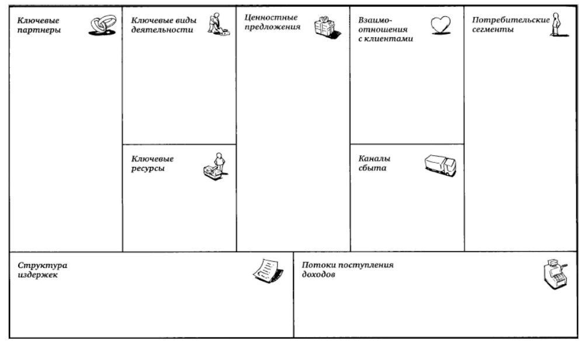
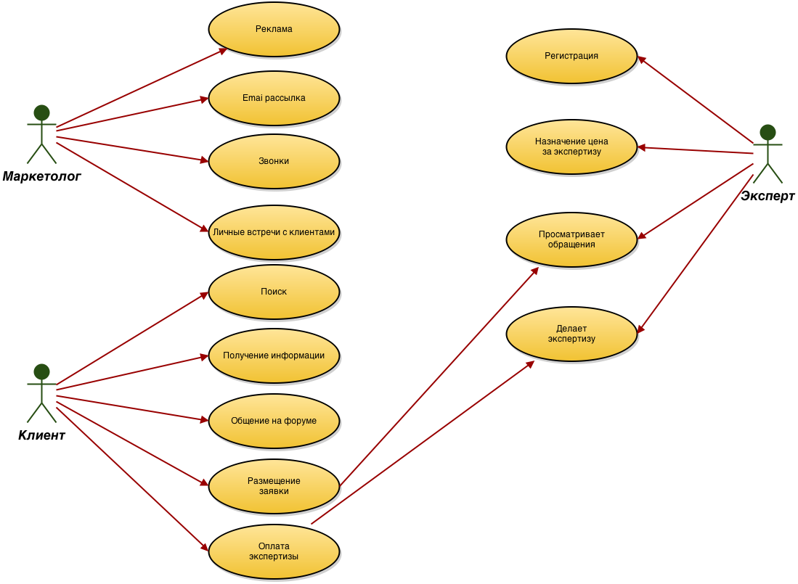

Digital Medicine Dictionary (DMD), руководитель = Алексей Прохоренко
DigitalMed, руководитель = Малов Владимир
Medical record backend, руководитель = Старшинова Светлана
Bio state tracking, руководитель = Уваров Сергей
BMG for "S&P", руководитель = Матвеев Александр
Модель BMG Canvas

Ключевые партнеры:
Скородумов и партнеры
Государство
Поисковики, СМИ
Маркеты мобильных устройств
Производственные предприятия
Научно-экспертное сообщество
Инвесторы
Поликлиники/больницы
Другие стартапы
Ключевые виды деятельности:
Разработка специализированного ПО
Создание словаря медицинских терминов
Интеграция с другими стартапами
Создание web-платформы для межвузовского сотружества
Outsorting
Создание объектов интеллектуальной собственности компании S&P.Ink
Ценностное предложение:
Новизна
Производительность
Экономия
Доступность
Удобство
Снижение риска
Позиционирование
Защита интеллектуальной собственности
Каналы сбыта:
Мобильные приложения через маркеты каждой мобильной ос
Сайт
Десктопное приложение
Поисковые системы
Государственные фирмы, для каждого проекта специфичны, надо найти пример
Конкретно больницы, что-то можно сбывать через них, наверное. Хотя бы та же вирусная реклама.
Потребительские сегменты:
Поликлиники/больницы
Пользователи интернета
Пользователи мобильных приложений
Врачи/пациенты
Взаимоотношения с клиентами:
Консультирование на сайте
Встречи с партнерами проекта
Посредники в общении партнёров и потребителей
Организация конференций
Техническая поддержка
Обучающее видео
Документация
Структура издержек:
Поликлиники/больницы
Аренда помещения, оборудования
Покупка лицензий программного обеспечения
Аренда виртуального сервера из облака
Траты на продвижение и развитие платформы
Заработная плата сотрудникам
Покупка патента на интеллектуальную собственность
Потоки поступления доходов:
Продажа прав на интеллектуальную собственность/лицензии
Реклама
Комиссия с оплаты услуг экспертов
Продажа разработанных устройств
Модель BMG Canvas

Анализ конкурентов:
Bio state tracking: Абсолютных аналогов нет, однако
существуют похожие проекты, такие как: Health Buddy. Однако он не подходит под нужды
пилотов.
DigitalMed: Существует огромное количество готовых медицинских порталов,
но не один из них не реализует всего описанного в проекте функционала с достаточно
удобной структурой. Однако в ближайшее время обещает появиться портал, в который
уже вложено 1.35 млн $. Стоит внимательно присмотреться к этому потенциальному
конкуренту. http://medportal.ru/mednovosti/tag/tsifrovaya-meditsina/
Анализ конкурентов:
Medical record backend. Министерство здравоохранения недавно
утвердило форму единой электронной медицинской карты пациента. Карта состоит и
з 15 разделов, в каждом из которых имеется множество подпунктов.В связи с этим
фактом перспективы проекта кажутся не очень благоприятными.
http://medportal.ru/mednovosti/news/2013/11/20/014medkarta/
Анализ конкурентов:
Digital Medicine Dictionary
Конкуренты:
http://www.medslv.ru/
http://www.ill.ru/cgi-bin/form.meddict.pl
Приведенные выше конкуренты представляют из себя обычные копии книжных
версий словарей и не реализуют поиск по терминам, базу экспертов.
Так же не один из них не включает в себя базу лекартсв и заболеваний одновременно.